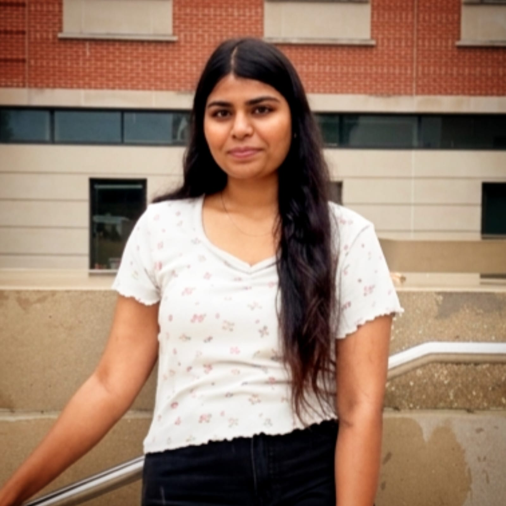

MSc Alumna
Kavya D
PhD Student at Baylor University
Kavya D. completed her M.Sc. project with the T&CMC Research Group and is currently pursuing her Ph.D. at Baylor University, Texas.
Her research work with the group focused on computational materials chemistry and bioinorganic photochemistry. She investigated transition metal ion intercalation in WS2 for enhancing supercapacitive performance using first-principles calculations. She also worked on graphene-functionalized iridium complexes for improved photodynamic therapy through computational modelling.
Her research experience reflects an interest in applying quantum chemical methods to energy storage materials and therapeutic molecular systems.